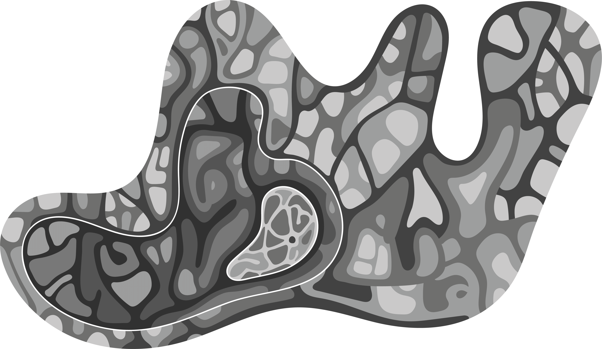
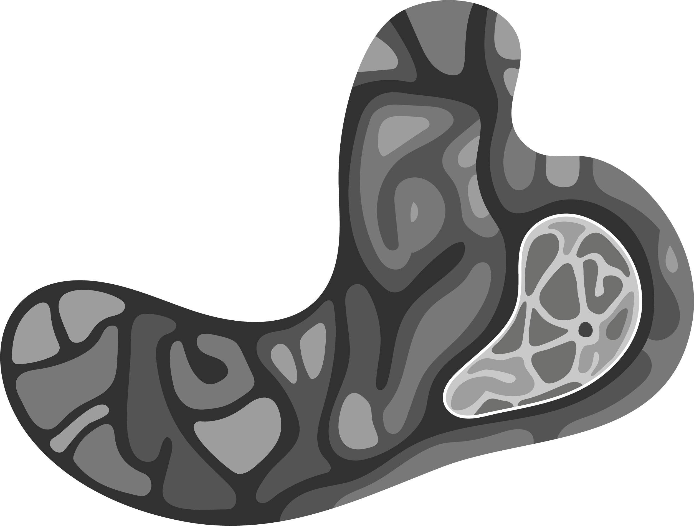
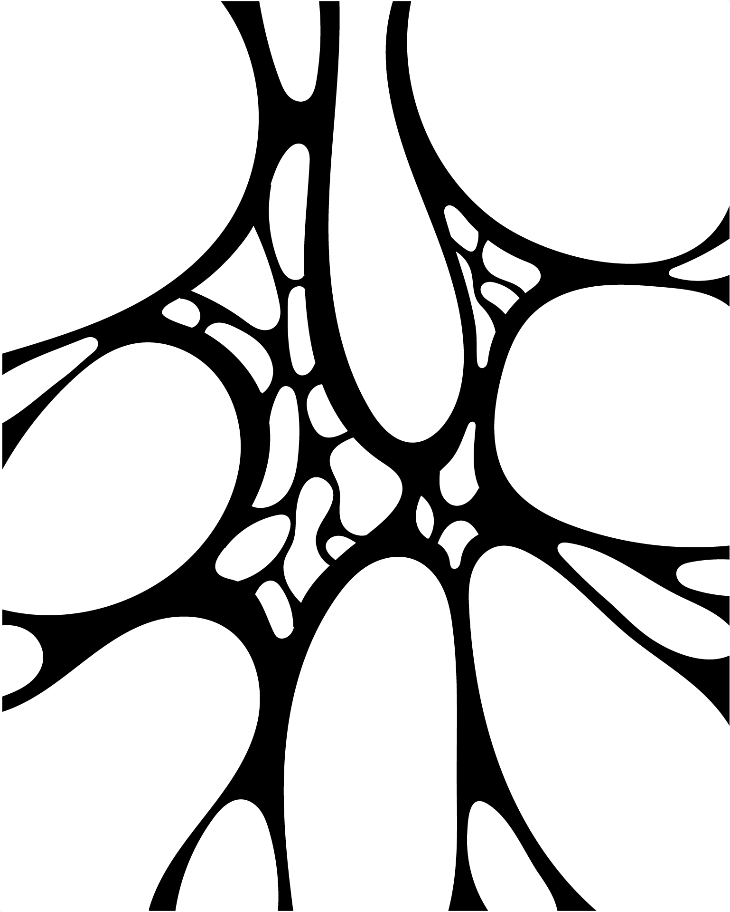
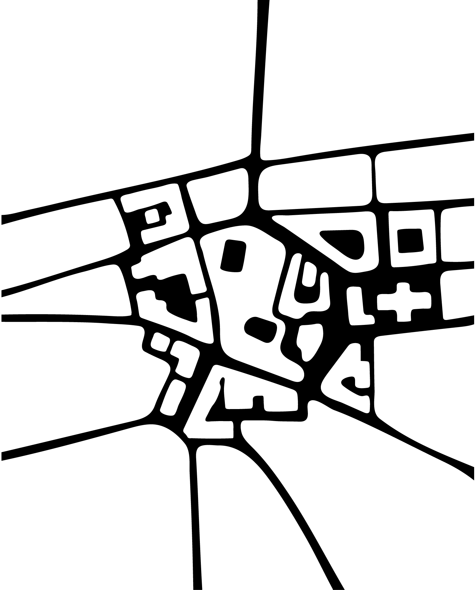
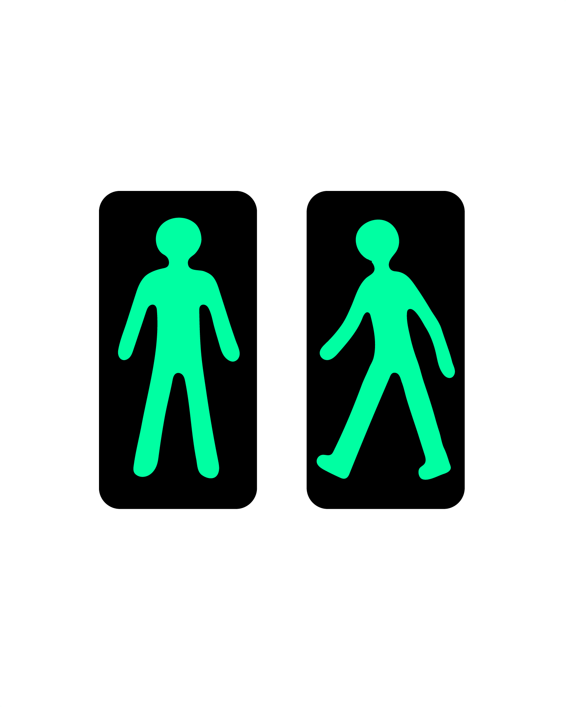

Les nouveaux poursuiveurs missionnés de la ville-environnement d’Ozirbul, désignés par les paroles d’usagers majoritaires à l’instant t, étaient postés sur le bord de la pré-couche, prêts à partir à l’assaut du multicouche pour traquer le Lubrizo. Leurs antécédents poursuiveurs avaient transmis leurs dernières métadonnées 4 intervalles temporels plus tôt, conformément au protocole en vigueur assurant la collecte en couche abstraite de ces métadonnées.
La veille de cette nouvelle procédure, un Lubrizo avait encore transformé une collection de données règlementaires liées au comportement des éléments physiques véhicules terrestres à moteur - plus particulièrement des trottinettes électriques en libre-service - dans le sous-système de rang 1 d’Orzibul, le quartier de Ro d’Ettuog. Les trottinettes avaient alors commencé à s’empiler rigoureusement dans chaque parcelle disponible du quartier, formant de hautes structures compactes qui atteignaient exactement la hauteur maximale autorisée pour les constructions dans cette zone. On les soupçonnait d’avoir adopté la réglementation issue du Code de la Construction et de l'Habitation sur les immeubles de grande hauteur sous l’action d’une fonction de provocation. A l’appui de cette hypothèse, l’analyse croisée des métadonnées des poursuiveurs sur les 28 derniers super-intervalles temporels avait mis en évidence un principe actif commun aux différentes versions de ce perturbateur de données relevant de la décontextualisation.
Le Lubrizo, ce parasite dérivé de l’ère pré-matricielle, perturbateur échevelé et souverain de la surprise restait malgré tout insaisissable. Tapis dans l’intercouche, il attirait les poursuiveurs par des ruses à l’infini recomposées, usant des rouages les plus intimes et viscéraux de la procédure. Combien de poursuiveurs avaient été collectés à l’état de reste cubique après avoir subi une transformation de gamification ou de substance difforme post-fonction déformation ! A chaque traversée de couche, c’étaient près de la moitié des poursuiveurs qui se retrouvaient transformés, parfois au profit de leur avancée dans le multicouche, mais bien souvent au détriment de la persistance des poursuiveurs comme éléments physiques. En changeant de couche, les poursuiveurs mutaient souvent vers un nouveau type de données : un son qui restait alors dans l’air de leur parcours temporel ; un élément de réglementation de la prochaine série de métadonnées transférées à la matrice - ceux-là étaient les plus retors car ils dénaturaient parfois totalement le contenu du set et laissaient perplexe la matrice - ; ou encore un flux en écoulement perpétuel dans la couche recevant la mutation.
La ville-environnement et ses couches postérieures s’en trouvaient saturées de traces numériques, celles des données abandonnées à leur sort après mutation de leur antécédent mais aussi celles de leurs transformations dans les couches postérieures.
Les poursuiveurs les plus respectés étaient ceux qui savaient exploiter leur modalité d’existence sans cesse renouvelée, qui s’étaient préparés aux transformations les plus imprévisibles et qui appréhendaient l’émergence. Ils étaient aussi ceux qui alimentaient le plus efficacement les sets de métadonnées transmises à la matrice, consolidées sur plusieurs intervalles.
Mais jusqu’ici, aucun poursuiveur antécédent n’avait réussi à collecter un Lubrizo et à l’analyser. Aucun à vrai dire n’avait même dépassé la couche virtuelle. On racontait des légendes sur l’existence d’une couche postérieure : la “post-virtuelle”, une couche si semblable à la réalité qu’elle amènerait les poursuiveurs à un état de doute permanent. Cet état était largement nourri par l’impossibilité de modéliser le chaos généré par la superposition des couches, connues ou inconnues. Il rendait les métadonnées collectées de plus en plus difficiles à déchiffrer par la matrice au fil de la complexification du langage mobilisé pour les transmettre. Le langage lui-même se gonflait d’excroissances abstraites et virtuelles au fil de la traversée, comme autant de bruit interférant dans la lecture.
Mais la perspective d’une couche post-virtuelle plaquée sur la ville-environnement et fondue avec elle réjouissait les adeptes de Pierre Sansot
Nous prétendrons que le vécu nourrit, authentifie certaines mythologies (celles des journaux, des rengaines, des romans faciles) et que celles-ci en revanche, donnent consistance au vécu (les paroles, les marches, les habitudes des hommes de la ville). Comment concevons-nous donc leurs rapports, comment les sauver de l’insignifiance ou de la théâtralité?
Nous avancerons la proposition suivante : il est de l’essence de la ville de se déplier et de se redoubler elle-même. : à la façon d’une conscience collective? d’un homme qui se raconte des histoires? Nous ne prendrons pas parti ; nous constatons le phénomène que nous ne retrouvons pas dans tout groupe organisé. [...] Les jeux d’échos et de reflets sont plus nombreux dans une ville, comme si les villes étaient bavardes, volubiles par vocation
Pierre Sansot, Poétique de la ville
, qui croyaient à un système multicouche convergent bouclé sur lui-même, en expansion-transformation permanente à la manière d’un système procédural de jeu vidéo. Cette théorie expliquait la variété des interactions observables sur la pré-couche elle-même et l’instabilité chronique des données-éléments physiques. Certaines traces retrouvées directement sur la ville-environnement laissaient croire au passage de perturbateurs issus d’autres systèmes, peut-être d’autres couches, comme si la ville-environnement avait muté infiniment avant de se replier sur elle-même à la manière d’une pâte feuilletée.
D’autres, parmi les fidèles de Rick Sanchez,
"
croyaient fermement en l’existence de microcouches à la ville-environnement, de sous systèmes qui ne seraient pas parties d’elle-même mais imbriqués à l’intérieur, une mise en abîme de villes-environnements prisonnières d’autres villes-environnements et dilatées à l’intérieur.
Au-delà de ces querelles dogmatiques, on ne pouvait nier que la ville-environnement était parfois agitée de turbulences au cours desquelles on pouvait apercevoir un Lubrizo à découvert. Semblables à des hallucinations, ces instants fugaces semblaient échapper au parcours temporel ordinaire d’Orzibul. Les métadonnées de Lubrizo captées lors de ces apparitions affichaient d’ailleurs des comportements très étrangers à celles habituellement projetées en couche abstraite, comme recueillies d’une couche encore ignorée.
On retrouvait souvent, autour des lieux d’émergence de ces turbulences, des restes de matière colorée malléable à différents niveaux d’abstraction, comme des projectiles mous, parfois visqueux, échoués dans un périmètre borné de la pré-couche. Ils étaient parfois accompagnés de sons évanescents, agités d’un comportement joueur, ou témoignaient de signes d’intelligence artificielle.
Au moment où les nouveaux poursuiveurs s’apprêtaient à quitter la pré-couche pour s’élancer dans la couche abstraite, on voyait encore quelques unes de ces projections retomber au loin comme les cendres d’une éruption refroidies et teinter l’horizon de reflets turquoise.
Je propose ici de développer une méthode ou procédure, appuyée sur une matrice, pour augmenter la réalité de l’espace urbain, appelé ville-environnement (VE), par des “plugins” ou modules d’extension alimentés par les données prélevées sur la ville-environnement. Ces modules sont de l’ordre de la visualisation numérique, de la projection dans le réel et/ou de la fiction et du jeu, respectivement envisagés comme couche virtuelle, couche sensible et couche expérientielle. Il faut imaginer ces couches d’existence comme celles d’une coupe géologique, un espace à n-dimensions qui emprunterait certains traits à l’idée de multiverse, tourné en multicouche. Elles sont à la fois superposées à la ville-environnement, ses prolongements imaginaires
Pour distinguer sérieusement deux lieux réels, ne faut-il pas d’abord chercher ce qui les distingue imaginairement, se demander de quels prolongements oniriques ils sont capables?
Pierre Sansot, Poétique de la ville
et en sont parties intégrantes dans un autre univers. C’est aussi un effort pour embrasser la ville plus intimement, l’enduire puis l’incruster par touches de subjectivité.
L’objectif et le subjectif devraient, en stricte vérité, être indissociables, tout comme l’image renvoie à la conscience imageante ou le perçu à une conscience percevante.
Pierre Sansot, Poétique de la ville
Cette procédure fait écho à un projet plus global de générer une ville-projet artistique pluggée sur la ville-environnement en manipulant un modèle procédural appliqué au monde physique construit à partir - ou alimenté par - des informations (données) prélevées dans la ville-environnement urbain-support.
Dans un second temps, le projet peut consister à organiser la convergence des différentes couches, la convergence entre réalité et fiction - les deux extrêmes de la coupe géologique -, vers un prolongement onirique, décalé, de la ville fondu avec son prolongement mathématique.
La méthode vise également à explorer les possibles et participer à faire émerger un ou plusieurs sujet(s)/objet(s) de projet(s) à approfondir dans un second temps via l’expérimentation autour du “matériau ville” et du matériau Lubrizo
Chromatographe
gris : réalité
vert : éléments de la couche abstraite
vert fluo : fonctions, appartenant à la couche abstraite et ayant une action sur des éléments de la couche abstraite
Ce mémoire est une matrice qui génère une collection faussement exhaustive de projets artistiques potentiels réalisables sur la ville-environnement avec un matériau prélevé dans la ville-environnement. Ce matériau, ce sont les données produites par et dans la ville-environnement, par plusieurs de ses composants et participants. Le projet s’apparente ainsi à une tentative pour organiser l’artialisation in situ de la ville-environnement au sens d’Alain Roger,
L’artiste, quel qu’il soit, n’a pas à répéter la nature - quel ennui, quel gâchis ! -, il a pour vocation de la nier, de la neutraliser, en vue de produire des modèles, qui nous permettront, à rebours, de la modeler. “Je rature le vif”, écrivait Valéry : il s’agit, d’abord, de raturer la nature, de la dénaturer, pour mieux la maîtriser et nous rendre, par le processus artistique aussi bien que le progrès scientifique, “comme maîtres et possesseurs de la nature”. L’art, selon Lévi-Strauss, “constitue au plus haut point cette prise de possession de la nature par la culture, qui est le type même des phénomènes qu’étudient les ethnologues”.
Alain Roger, Court traité du paysage
le modèle qui nous donne les moyens de modeler à notre guise la ville-environnement.
La matrice à projets artistiques potentiels fait aussi écho aux cartographies potentielles du manuel Terra Forma
Ce livre raconte l’exploration d’une terre inconnue, la nôtre. A la suite des voyageurs de la Renaissance partis cartographier les terra incognita du Nouveau Monde, nous entreprenons, cinq siècles plus tard, de découvrir une autre Terre, ou plutôt de redécouvrir autrement celle que nous croyons si bien connaître. Mais nous ne sommes pas au temps des Grandes Découvertes. Notre voyage se fera vers l’intérieur et non vers les lointains, en épaisseur plutôt qu’en étendue. S’il revient aux cosmographes d’avoir élargi l’horizon, fait de la cartographie un art associant le mouvement et la trace, notre quête s’est en quelque sorte inversée: nous avons changé de cap, passant de la ligne d’horizon à l’épaisseur du sol, du global au local.
Frédérique Aït-Touati, Axelle Grégoire, Alexandra Arènes, Terra Forma: Manuel de cartographies potentielles
comme instrument d'exploration des épaisseur abstraites, virtuelles, sensibles et expérientielles de la ville-environnement. Celle-ci étant en perpétuelle évolution, nous pourrions nous aussi faire bon usage d’un GPS réinventé
Dans ce GPS d’un nouveau genre, ce sont les points vivants qui créent l’espace, définissent leurs propres paramètres, engendrent la carte. Le statut de la carte en est modifié: elle n’est plus un dessin fixe mais un état provisoire du monde, un outil de travail en évolution, constamment fabriqué par les vivants. Le statut de l’espace en est modifié : il n’est plus simple contenant, mais milieu vivant, vibratile, composé des mille superpositions et actions des êtres qui nous entourent, constamment et indéfiniment produit par les mouvements et les perceptions de ceux qui le font.
Frédérique Aït-Touati, Axelle Grégoire, Alexandra Arènes, Terra Forma: Manuel de cartographies potentielles
pour se repérer et naviguer dans la ville-environnement augmentée, dans le multicouche expansé.
La ville-environnement (VE) est donc le support d’expérimentations de projets artistiques sur elle-même. VE est prise comme un système principalement déterminé par ses frontières (celles de la ville), les éléments qui en font partie et les relations entre ces éléments.
Il faut imaginer la ville-environnement comme une collection d’éléments, d’ingrédients, un jeu de Lego à l’infini recomposable, une matière composite et modulaire extrêmement ludique mais aussi chargée de sens, de routines, de subjectivités et d’individus qui la modèlent en continu. Mais ici on se placerait au dessus, au niveau du satellite depuis lequel la ville-environnement devient ce grand plateau de jeu modulable, et l’usage des individus, le pétrissage perpétuel qu’ils exercent sur elle, imperceptible. De là-haut, on joue avec la ville-environnement avant d’y redescendre pour y placer quelques modules complémentaires palpables et turbulents, pour y capter leurs effets et pénétrer le multicouche. Italo Calvino
Les villes de Marco Polo se ressemblaient, comme si le passage de l’une à l’autre n’eût pas impliqué un voyage mais un échange d’éléments. A présent, à partir de chaque ville que Marco Polo lui décrivait, l’esprit du Grand Khan partait
pour son propre compte et, la ville une fois démontée pièce à pièce, il la reconstruisait d’une autre façon, par substitutions, déplacements, interversions de ses ingrédients.
Italo Calvino, Les villes invisibles
nous accompagnera dans ce projet à distance et par ses Villes Invisibles qui inspirent nos exemples.
Le passage de ville à ville-environnement est ce qui permet d’entrevoir le rêve d’exhaustivité simulé par la matrice : c’est un ensemble selon la théorie éponyme au fondement des mathématiques, un ensemble d’éléments donc, "une multitude qui peut être comprise comme un tout" (au sens d'omnis) nous précise Wikipédia, dans lequel des propriétés opèrent des relations entre ces éléments. Italo nous suit encore ici, où l’empereur
J’ai bien construit en esprit un modèle de ville à partir duquel déduire toutes les villes possibles. Il contient tout ce qui répond à la norme. Comme les villes qui existent s’éloignent à des degrés divers de la norme, il me suffit de prévoir les exceptions à la norme et d’en calculer les combinaisons les plus probables.
Italo Calvino, Les villes invisibles
propose une normalisation alarmante mais où Marco Polo
Moi aussi j’ai pensé à un modèle de ville duquel je déduis toutes les autres. C’est une ville qui n’est faite que d’exceptions, d’impossibilités, de contradictions, d’incongruités, de contresens. Si une ville ainsi faite est tout ce qu’il y a de plus improbable, en abaissant le nombre des éléments anormaux la probabilité grandit que la ville existe véritablement. Par conséquent, il suffit que je soustraie de mon modèle des exceptions, et de quelque manière que je procède j’arriverai devant l’une des villes qui, quoique toujours par exception, existent. Mais je ne peux pas pousser mon opération plus loin qu’une certaine limite : j’obtiendrais des villes trop semblables pour être vraies.
Italo Calvino, Les villes invisibles
nous sauve de l’ennui !
Le rêve d’exhaustivité est tout de même à relativiser pour le lot d’angoisse qui l’accompagne : dans l’univers multicouche de cet infini de combinaisons possibles à l’origine de projets générés, quel sera le projet émergent dans la ville ? Italo
Le catalogue des formes est infini : aussi longtemps que chaque forme n’aura pas trouvé sa ville, de nouvelles villes continueront de naître. Là où les formes épuisent leurs variations et se défont, commence la fin des villes.
Italo Calvino, Les villes invisibles
sors de ce corps.
En général, nos expérimentations porteront non pas sur la totalité de VE, mais sur des portions ou composants de celle-ci, considérés comme des sous-systèmes de VE. Les sous-systèmes de VE partagent la caractéristique de participer à un même système de rang supérieur, VE.
Considérant que l’on peut choisir des sous-systèmes de VE imbriqués les uns dans les autres, à la manière d’une poupée russe ou du modèle point de vie de Terra Forma,
Ce concept de point de vie nous invite à réinterroger la relation du corps au monde. L’ancrage dans le territoire passe par un phénomène d’incarnation qui oblige à penser la peau, l’écorce de l’arbre et la croûte terrestre comme un continuum
d’enveloppes. La cartographie permettrait alors de représenter ces corps interconnectés : du point de vie à l’espace-monde. Pour un être humain :
Frédérique Aït-Touati, Axelle Grégoire, Alexandra Arènes, Terra Forma: Manuel de cartographies potentielles
on comprend qu’il y aura différents rangs auxquels définir ces sous-systèmes (ou niveau d’imbrication), qui correspondent à des échelles territoriales infra dans la ville :
VE = l’ensemble d’une ville, de préférence intramuros
un sous-système de VE de rang 1 = un quartier de la ville
un sous-système de VE de rang 2 = un espace particulier d’un quartier de la ville, comme une place, un espace public, un bâtiment, un croisement de rues, un square, un îlot, etc.

représentation d’une ville-environnement VE

Sous-système de VE de rang 1
Sous-système de VE de rang 2
Les données sont des informations prélevées sur les éléments de la ville-environnement. Nous élargissons le champ habituel de ce que l’on appelle des données, dans une acception large et abusive de cette notion. Les données ici seront choisies pour leur capacité à manifester des informations prélevées sur la ville-environnement : des images, des sons, des flux, des paroles d’usagers, des éléments de réglementation,... Souvent, les données prélevées seront assorties de leurs métadonnées.
Une métadonnée est une donnée servant à décrire une autre donnée, qui lui est associée et permet d’y appliquer des traitements. On parle ainsi de documentation des données lorsque l’on associe à des données des métadonnées permettant de les replacer dans le contexte de leur collecte. Par exemple, on peut associer à une donnée la date à laquelle celle-ci a été collectée.
D’autres données prises comme matériau dans ce mémoire sont bel et bien des données (décrivant par exemple des éléments physiques implantés dans la ville, qu’on désignera en raccourci “élément physique” comme type de données). D’autres encore sont déjà des formes de représentation des données, que je rétrograde volontairement au statut primitif de donnée. C’est le cas par exemple des représentations cartographiques, qui figurent parmi les types de données intégrées à la matrice.
En tout, la matrice intègre 7 types de données différents :
image son élément physique flux représentation cartographique parole d'usager réglementation
Cette matrice fonctionne comme une procédure qui fait passer les données à travers différents niveaux de transformations qui coïncident avec leur passage symbolique dans une série de couches d’existence : la couche abstraite, la couche virtuelle, la couche sensible et la couche expérientielle.
Dans chacune de ces couches, nous inventons ou mobilisons les outils qui opèrent des transformations sur leurs éléments. Entre modélisation mathématique par des fonctions et mobilisation de l’imagination humaine pour l’émergence d’expériences, ils sont autant de manières de naviguer entre les couches
L’objectif est de développer d’autres modes de faire inspirés de la modélisation, outil privilégié de la science contemporaine, pour anticiper des futurs possibles (modèle climatique) autant que pour formaliser des idées abstraites (modèle mathématique). Chaque outil, ou modèle, est conçu comme une nouvelle focale à travers laquelle est redessiné un territoire. Nous avons cherché des outils qui permettent de naviguer entre les échelles, de sortir du cadre métrique établi pour aller vers une conception écosystémique. Les modèles proposés constituent des outils prospectifs pour envisager non pas le devenir du climat, mais celui de notre milieu: ce que les scientifiques des nouvelles sciences du système Terre [...] nomment aujourd’hui la “zone critique”.
Frédérique Aït-Touati, Axelle Grégoire, Alexandra Arènes, Terra Forma: Manuel de cartographies potentielles
et moduler la ville-environnement.
La couche abstraite à la ville-environnement est la couche où les données sont collectées puis traitées.
Les traitements servent à transformer les données. Ce sont des perturbateurs de données qui permettent d’en explorer la malléabilité, de travailler ce matériau. Les outils que nous mobilisons pour exécuter ces perturbations sont des fonctions définies pour l’occasion. Alors que des déformations peuvent être appliquées à un matériau physique vers une réalisation ou oeuvre via le maniement d’outils dédiés au travail de cette matière, qui mieux que les fonctions pour travailler, modeler, transformer le matériau abstrait des données ? On ne fait en cela que suivre la prescription pour des fonctions de l’irréel formulée par Bachelard.
L’imagination, dans ses vives actions, nous détache à la fois du passé et de la réalité. Elle ouvre sur l’avenir. A la fonction du réel, instruite par le passé, [...] il faut joindre une fonction de l'irréel tout aussi positive[...].
Une infirmité du côté de la fonction de l’irréel entrave le psychisme producteur. Comment prévoir sans imaginer?
Gaston Bachelard, La poétique de l'espace
Disons même que nos fonctions transforment des parties du réel de la ville-environnement en irréel émergent dans la couche abstraite, pour une dynamisation poétique
Mais, touchant plus simplement les problèmes de l’imagination poétique, il est impossible de recevoir le gain psychique de la poésie sans faire coopérer ces deux fonctions du psychisme humain : fonction du réel et fonction de l’irréel. Une véritable cure de rythmanalyse nous est offerte par le poème qui tisse le réel et l’irréel, qui dynamise le langage par la double activité de la signification et de la poésie. [...] Les conditions réelles ne sont plus déterminantes. Avec la poésie, l’imagination se place dans la marge où précisément la fonction de l’irréel vient séduire ou inquiéter - toujours réveiller - l’être endormi dans ses automatismes.
Gaston Bachelard, La poétique de l'espace
de la ville-environnement. Les fonctions ont l’effet de transformer les données, on parle donc de données transformées pour désigner le résultat de l’application d’une fonction à des données de la ville-environnement ou d’un de ses sous-systèmes.
Mais, “dans une ville, on ne sait jamais qui reflète et qui est reflété” nous prévient Pierre Sansot.
Dans une ville, on ne sait jamais qui reflète et qui est reflété, quel est le son et quel est l’écho, qui a la fièvre le soir, si ce sont les lumières de la ville ou les passants affairés. On ne saurait distinguer le réel de l’imaginaire, ce qui se passe sur l’écran ou dans les rues qui avoisinent les cinémas, si l’affiche nous regarde ou si elle entre distraitement dans notre champ de vision. Les mots, rengaines de chansons, plaisanteries du jour, gros titres répétés des journaux, sont mêlés aux choses et aux êtres. Ils n’ont pas besoin - pour être pris au sérieux - d’être comme la signature de Dieu. Ils emplissent les bistrots, les magasins, les manifestations (et nous hésitons à qualifier d’urbain les lieux qui ne présentent pas ce phénomène de résonance).
Pierre Sansot, Poétique de la ville
Et, en effet, les données et données transformées virevoltent dans une chorégraphie commune qui brouille les pistes de la réalité lorsque l’on a quitté la ville-environnement pour rejoindre sa couche abstraite, lieu de toutes les fantaisies de l’imaginaire.
Les fonctions définies sont conçues pour explorer les possibles transformations applicables aux données choisies. Elles sont au nombre de huit et répondent aux appellations suivantes :
Pour chaque type de données, les huit fonctions sont déclinées dans leurs effets. La signification profonde d’une fonction reste cachée derrière les fioritures de la signification de chacune de ses versions : il y a ainsi 7 “absurdification” différentes, 7 “magification”, 7 “provocation”, etc. qui toutes partagent entre elles sept un noyau ou principe actif commun qui pourra éventuellement se deviner lorsque leurs actions sont énoncées.
Prenons l’exemple de l’absurdification, qui se décline comme suit :
image → ajout de nouveaux éléments absurdes à l'image son → ajout de nouveaux sons issus de contextes en décalage (milieu urbain : ajout de bruit de vagues, voix robotique,...) élément physique → ajout d'éléments absurdes complémentaires à l'élément (fioritures, accessoires, excroissances, membres,...) flux → ajout d'éléments de flux différent au flux traité (ex : liquide dans flux trafic, animaux dans flux de marchandises,...) représentation cartographique → ajout de nouveaux éléments absurdes dans la carte parole d'usager → transformation de chaque parole en sa version abstraite (remonter systématiquement au concept jusqu'à l'absurde) réglementation → ajout de nouvelles règles absurdes
Cet échantillon fait entrevoir que la fonction absurdification vient souvent associer aux données d’autres données nouvelles en décalage par rapport aux premières, décalage faisant surgir l’absurde. Mais le fait que l’une des déclinaisons de l’absurdification, pour la donnée “parole d’usager”, ne se conforme pas à cette règle nous empêche de la considérer comme noyau commun aux déclinaisons, ou partie fixe de la fonction absurdification. L’absurdification de parole d’usager fait plutôt survenir l’absurde en faisant tendre les données vers une schématisation excessive. Le noyau de l’absurdification se perd alors dans l’absurdité de ses formes déclinées.
Mais il en va apparemment autrement de la fonction provocation dont les déclinaisons font état d’une certaine constance rassurante :
image → changement du décor ou de l'arrière plan de l'image son → décontextualisation : intervention/irruption incongrue du son dans une situation autre (sons de l’espace privé --> espace public) élément physique → changement de la localisation des éléments flux → changement des points de desserte du flux (ex : déplacement arrêts de bus) représentation cartographique → changement de la localisation de la carte dans le territoire supra parole d'usager → changement de l'ordre des mots dans les phrases réglementation → changement des objets sur lesquels porte la réglementation (code de la route --> piétons, règles d'urba --> vélos,...)
Clairement la provocation éclate par un changement de localisation ou du contexte de la donnée elle-même (au sein du système de VE ou d’un de ses sous-systèmes) ou de la localisation d’une de ses parties
Les fonctions sont en quelque sorte les règles du jeu de notre couche abstraite à la ville-environnement, son système de communication interne, le réseau immatériel flexible évoqué par Yona Friedman
La ville est l'”ossature matérielle” d’une société. Cette ossature peut être représentée sous forme de réseau : des chemins, des enclos, des frontières. Mais ce réseau matériel ne détermine pas la manière suivant laquelle il est “utilisé” : les “règles du jeu”. Il est alors accompagné d’un autre réseau, celui-là immatériel. Si le réseau matériel de la ville est relativement immobile, peu ouvert aux changements, le réseau immatériel, celui des communications, est éminemment flexible. Si nous examinons plus attentivement ce qui rattache l’utopie à la ville, nous allons trouver que la ville, elle-même, est une utopie réalisée, peut-être même la première utopie humaine réalisée. Il semble évident que le but recherché dans la plupart des utopies concerne l’amélioration de cette organisation qu’est la ville, puisqu’elle est d’abord une organisation beaucoup plus qu’un territoire occupé. [...] Nous touchons là à une conception de la ville bien différente de celle, plus habituelle, qui veut qu’elle ne soit rien d’autre qu’un agencement d’objets matériels sur un territoire qu’ils occupent (bien que certains liens existent entre ces deux aspects).
Yona Friedman, Utopies réalisables
comme matériau de ses Utopies réalisables.
Les manipuler dans la matrice revient alors à déclencher la chorégraphie
Le rôle de l’architecte-cartographe s’en trouve singulièrement transformé. Car il lui revient alors moins d’aménager un territoire que de chorégraphier les mouvements des vivants.[...] L’architecte-chorégraphe s’intéresse aux circulations des vivants; il voit les ruines comme d’extraordinaires réservoirs d’usages à inventer, ne conçoit pas l’espace en dehors des formes de vie qui le constituent, le perçoivent et le fabriquent.
Alexandra Arènes, Axelle Grégoire et Frédérique Aït-Touati, Terra Forma: Manuel de cartographies potentielles
ludique des données collectées et transformées au sein de la couche abstraite, couche plus agitée qu’elle n’y paraît, aux éléments souvent bouillonnants.



ABSURDIFICATION
IMAGE
ajout de nouveaux éléments absurdes à l'image
ABSURDIFICATION
SON
ajout de nouveaux sons issus de contextes en décalage (milieu urbain : ajout de bruit de vagues, voix robotique,...)
ajout d'éléments de flux différent au flux traité (ex : liquide dans flux trafic, animaux dans flux de marchandises,...)
ABSURDIFICATION
REPRESENTATION CARTOGRAPHIQUE
ajout de nouveaux éléments absurdes dans la carte
ABSURDIFICATION
PAROLE D'USAGERS
transformation de chaque parole en sa version abstraite (remonter systématiquement au concept jusqu'à l'absurde)
ABSURDIFICATION
REGLEMENTATION
ajout de nouvelles règles absurdes
MAGIFICATION
IMAGE
changement du sujet ou de l'origine de l'image (paysage --> portrait, enfant --> animal, étal de marché --> centre tri des déchets,...)
MAGIFICATION
SON
transformation de l'ambiane sonore pour immerger dans des imaginaires très différents
MAGIFICATION
ELEMENTS PHYSIQUES
transformation en d'autres éléments
MAGIFICATION
FLUX
changement de la nature du flux (humains--> liquides, énergie--> trafic, marchandises-> données,...)
MAGIFICATION
REPRESENTATION CARTOGRAPHIQUE
changement des éléments en d'autres (route --> bâtiment,...) / modification de la légende
MAGIFICATION
PAROLE D'USAGERS
ajout de nouveaux mots et remplacement de certains mots par d'autres dans les phrases
MAGIFICATION
REGLEMENTATION
changement du type de la réglementation (règle de circulation devient règle d'urba, règle de construction devient règle de destruction,...)
PROVOCATION
IMAGE
changement du décor ou de l'arrière plan de l'image
PROVOCATION
SON
décontextualisation : intervention/irruption incongrue du son dans une situation autre (sons de l’espace privé --> espace public)
PROVOCATION
ELEMENTS PHYSIQUES
changement de la localisation des éléments
PROVOCATION
FLUX
changement des points de desserte du flux (ex : déplacement arrêts de bus)
PROVOCATION
REPRESENTATION CARTOGRAPHIQUE
changement de la localisation de la carte dans le territoire supra
PROVOCATION
PAROLE D'USAGERS
changement de l'ordre des mots dans les phrases
PROVOCATION
REGLEMENTATION
changement des objets sur lesquels porte la réglementation (code de la route --> piétons, règles d'urba --> vélos,...)
DEFORMATION
IMAGE
déformation des éléments de l'image et changement de leurs tailles respective
DEFORMATION
SON
déformation tonale, dynamique, temporelle et/ou fréquentielle du son
DEFORMATION
ELEMENTS PHYSIQUES
déformation des éléments du volume (changement dimensions, courbes, proportions, ajout déformations...)
DEFORMATION
FLUX
compressions et décompressions ponctuelles du réseau (variations de vitesse et pression du flux induites)
DEFORMATION
REPRESENTATION CARTOGRAPHIQUE
changement de la structure des éléments de la carte (déformation des rues, bâtiments,...)
DEFORMATION
PAROLE D'USAGERS
traduction autre langue (voire langage des signes, morse, code informatique,...)
DEFORMATION
REGLEMENTATION
changement des "échelles" des éléments de réglementation (interdiction de stop reconduit tous les 2m, hauteurs de construction autorisées X10,...)
DETOURNEMENT
IMAGE
changement de l'action de l'image ou mise en action de l'image (ajout d'une action)
DETOURNEMENT
SON
changement de la "matière"/sonorité du son (bruit --> instrument, voix --> aboiement,...)
DETOURNEMENT
ELEMENTS PHYSIQUES
changement de la fonction des éléments et de leur taille
DETOURNEMENT
FLUX
intégration d'obstacles/objets solides pour perturber et détourner le flux
DETOURNEMENT
REPRESENTATION CARTOGRAPHIQUE
changement de l'orientation des éléments de la carte de manière random
DETOURNEMENT
PAROLE D'USAGERS
remplacement de chaque phrase par une autre ayant une signification contraire
DETOURNEMENT
REGLEMENTATION
remplacement de chaque élément de réglementation par un élément de réglementation contraire
GAMIFICATION
IMAGE
génération d'un jeu de cartes à partir de la collection de données images
GAMIFICATION
SON
transformation du son en musique de jeu vidéo
GAMIFICATION
ELEMENTS PHYSIQUES
décomposition de chaque élément en parties constitutives, multiplication des éléments et réagencement en jeu modulaire
GAMIFICATION
FLUX
décomposition recomposition du réseau sous forme de labyrinthe / plateau de jeu
GAMIFICATION
REPRESENTATION CARTOGRAPHIQUE
découpage de la carte en 4 morceaux, changement de l'échelle au 1/5 et multiplication et agencement des morceaux de carte dans la portion de carte dans la zone libérée
GAMIFICATION
PAROLE D'USAGERS
à chaque de parole, association d'une autre parole/considération dérivant de la première via cerveau humain (ex: demander à une 2e personne de produire l'association d'idée)
GAMIFICATION
REGLEMENTATION
transformation de la règlementation en règle du jeu
ARTIALISATION
IMAGE
transformation des couleurs et réinterprétation de l'image en dessin en matériau Lubrizo
ARTIALISATION
SON
transformation du son en mélodie
ARTIALISATION
ELEMENTS PHYSIQUES
changement des matériaux et textures des éléments
ARTIALISATION
FLUX
utilisation du parcours du flux comme des lignes de dessin et recréation du flux à partir d'un nouveau dessin
ARTIALISATION
REPRESENTATION CARTOGRAPHIQUE
changement de la nature de carte : transformation de la carte en motifs et modification des couleurs et textures
ARTIALISATION
PAROLE D'USAGERS
transformation de la parole en poésie (voire mise en vers)
ARTIALISATION
REGLEMENTATION
transformation des éléments de réglementation en éléments d'artialisation (couleurs, composition, perspective, esthétique,...)
FRACTALISATION
IMAGE
génération d'un fractal à partir de l'image (simplification puis imbrication successive ou recadrage sur un détail et répétition/imbrication
FRACTALISATION
SON
création d'une séquence de son par imbrication successive de sous-séquences similaires aux rythmes croissants
FRACTALISATION
ELEMENTS PHYSIQUES
génération d'un élément-fractal à partir de l'élément (par simplification puis imbrication successive de parties de l'élément)
FRACTALISATION
FLUX
ramification successive du réseau en fractal
FRACTALISATION
REPRESENTATION CARTOGRAPHIQUE
génération d'un fractal à partir de la carte
FRACTALISATION
PAROLE D'USAGERS
imbrication successive d'excroissances de phrases de détail sur les phrases supra
FRACTALISATION
REGLEMENTATION
imbrication successive d'éléments de réglementation de détail sur les éléments de réglementation supra
Les fonctions deviendraient ainsi presque limpides, sans l’intervention d’une fonction mystérieuse, de l'ordre du Lubrizo.
Personnage extrait de mes tics de la représentation de mes tactiques d’imbrication le Lubrizo se décline à différents niveaux de déformation et d’abstraction comme matériau il se déforme, s’altère et se mélange à d’autres multiplie les possibilités en hybridation employé au service d’idées passagères il prospère comme excroissance formaté pour construire des environnements englobants il s’insère, malicieusement façonné comme agent actif il réagit en débordant à la faveur de l’expérimentation.
Le Lubrizo ici prend la forme d’une composante “parasite” intégrée et s’attaquant à nos 8 fonctions et leurs déclinaisons. Se comportant comme un agent actif supplémentaire, un perturbateur complémentaire aux fonctions, il apporte aux données le potentiel de muter vers un nouveau type. Une donnée image pourra ainsi, en plus de sa transformation relative à l’application d’une des 8 fonctions, muter vers un son, ou vers un élément physique. Dans la suite de la procédure, il offre aux données la capacité d’accéder aux couches postérieures de celle-ci : virtuelle, sensible et expérientielle. Ce voyage inter-couche est permis par ce qu’on appelle la “vocation portail” du Lubrizo.
Le Lubrizo étant un matériau dont la couche d’existence n’est pas définie a priori, le fait qu’il soit intégré à toutes les fonctions qui agissent sur les données fait qu’il est transféré en essence aux données transformées et leur permet d’accéder aux autres dimensions ou couches.
Il faut y voir un clin d’oeil au principe des portails interdimensionnels. D’ailleurs, le générateur d'improbabilité infinie issu du film H2G2 donne une bonne approximation de l’effet potentiel du matériau Lubrizo sur les données.
Couche abstraite CA de la ville-environnement VE avant traitement des données
Couche abstraite CA de la ville-environnement VE après traitement des données par au moins une fonction f et sa composante Lubrizo
La couche virtuelle à la ville-environnement est une couche qui accueille des transcriptions virtuelles des données transformées issues d’un traitement numérique appliqué aux données.
Ces nouveaux traitements ne sont plus des fonctions, mais plutôt des expression des données sous une forme numérique. Ils engendrent ce qu’on appelle des substrats virtuels des données.
Les substrats virtuels s’apparentent à des principes d'individuation des données transformées exprimée sous forme virtuelle au sens de
Simondon.
Dans cette notion de principe, il y a un caractère qui préfigure l’individualité constituée, avec les propriétés qu’elle aura quand elle sera constituée ; la notion de principe d’individuation sort dans une certaine mesure d’une genèse à rebours, d’une ontogenèse renversée : pour rendre compte de la genèse de l’individu avec ses caractères définitifs, il faut supposer l’existence d’un terme premier, le principe, qui porte en lui ce qui expliquera que l’individu soit individu et rendra compte de son eccéité. Mais il resterait précisément à montrer que l’ontogenèse peut avoir comme condition première un terme premier : un terme est déjà un individu ou tout au moins quelque chose d’individualisable et qui peut être source d’eccéité, qui peut se monnayer en eccéités multiples.
Gilbert Simondon,, L’individuation à la lumière des notions de forme et d’information
La couche virtuelle est ainsi une couche intermédiaire vers la réalité, comme une préindividuation de la couche abstraite avant son individuation concrète dans la couche sensible postérieure confondue avec la réalité de la ville-environnement.
Les substrats sont générés par des outils numériques caractérisés par le fait qu’ils conservent leurs productions dans la couche virtuelle et qu’ils ne transfèrent pas ces productions vers le monde physique (ou, dans la procédure, la “couche sensible”). Nous ne limitons pas le champ des outils mobilisables dès lors qu’ils respectent cette règle, et les outils suivants peuvent alors être employés :
outils de traitement d’images
outils de traitement vidéo
outils pour réaliser des animations
outils de traitement du son
outils de modélisation 3D
outils de traitement de texte
En raison du très grand nombre d’outils appartenant à chacune de ces catégories et des similitudes dans les manières de les utiliser et d’en tirer des substrats virtuels, nous ne poussons pas plus loin dans le détail la spécification des outils mobilisables dans la couche virtuelle
Comme la liste des outils mobilisables pouvait le laisser présager, les substrats virtuels exprimés par le passage des données dans la couche virtuelle peuvent prendre 6 formes différentes, qui définissent les 6 types de substrats virtuels possibles :
visuel
son
texte
modélisation 3D
animation
icônes / signalétique
Le type de donnée à exprimer dans la couche virtuelle ne laisse en revanche pas présager du type d’outil employé pour traiter cette donnée : l’action imprévisible de la composante parasite Lubrizo, qui reste accroché aux données tout au long de leur voyage à travers leurs couches successives d’existence, est en effet déterminante dans la sélection des outils mobilisés dans chacune des couches traversées.
Une donnée de type image pourra ainsi pénétrer la couche virtuelle sous forme de texte, de son, ou encore de modélisation 3D, tandis qu’une donnée son pourra se retrouver icône une fois exprimée en substrat virtuel.
Couche virtuelle CV de la ville-environnement VE
La couche sensible à la ville-environnement reçoit des transcriptions sensibles des données transformées ou des substrats virtuels, issues d’un traitement impliquant une dimension sensible (ou physique) appliqué aux données ou aux substrats.
Ces traitements sont des transpositions (ou projections) des données ou substrats dans une forme sensible, c’est-à-dire une substance appréciable par les sens dans la réalité de la ville-environnement. D’ailleurs, la couche sensible n’est rien d’autre qu’un sous-système de la ville-environnement, auquel on donne un nom et une couleur particuliers, puisque tous deux se rejoignent par leur appartenance directe à la réalité tangible. Le nom de substance sensible donné aux éléments de la couche sensible vient simplement mettre l’accent sur le fait que ces éléments de la ville-environnement sont d’abord des produits sensibles de la procédure.
Pour mieux comprendre les ressorts de la couche sensible, considérons-la comme la réalisation urbaine d’une forme d’artialisation du milieu in situ décrite par Alain Roger
Il convient de distinguer deux modalités de l’opération artistique, deux façons d’intervenir sur l’objet naturel, ou, [...] d’artialiser la nature. La première est directe, in situ ; la seconde, indirecte, in visu, par la médiation du regard. [...] Si l’on prend l’exemple du corps féminin, il y a effectivement deux façons pour l’art de convertir en objet esthétique une nudité, qui, en elle-même, est neutre [...]. L’une consiste à inscrire le code artistique dans la substance corporelle, in vivo, in situ, et ce sont toutes ces techniques, réputées archaïques, que connaissent bien les ethnologues, peintures faciales, tatouages, scarifications, qui visent à transformer la femme en oeuvre d’art ambulante, tour à tour bariolée, ciselée, sculptée, selon que la sentence de l’art s’applique, s’imprime, s’incruste, s’incarne. Il en va de même pour notre maquillage, dont Baudelaire soulignait déjà qu’il “rapproche immédiatement l’être humain de la statue”, enduit sur nature, surnaturel. La seconde procédure est plus économique, mais plus sophistiquée. Elle consiste à élaborer des modèles autonomes, picturaux, sculpturaux, photographiques, etc., qu’on range sous le concept générique du Nu, par opposition à la nudité. [...] Il en va de même pour la nature, au sens courant du terme. A l’instar de la nudité féminine qui n’est jugée belle qu’à travers un Nu, variable selon les cultures, un lieu naturel n’est esthétiquement perçu qu’à travers un Paysage, qui exerce donc, en ce domaine, la fonction d’artialisation. [...] Il y a “du pays” mais des paysages, comme il y a de la nudité et des nus. La nature est indéterminée et ne reçoit ses déterminations que de l’art : du pays ne devient un paysage que sous la condition de ce qu’on pourrait nommer un paysart, et cela, selon deux modalités, mobile (in visu) et adhérente (in situ), de l’artialisation.
Alain Roger, Court traité du paysage
qui inscrirait une substance nouvelle comme code artistique dans la couche sensible de la ville-environnement.
Les substances sensibles sont matérialisées par des outils à composante mécanique ou optique. Cette catégorie d’outils comprend les outils à commande numériques, les outils manuels, automatisés, ou les outils de projection (de sons ou d’images) caractérisés par le fait qu’ils transfèrent leurs productions dans la couche sensible, le monde physique. Le champ des outils mobilisables est là aussi très vaste, à l’image des types d’outils suivants :
projecteur vidéo
lecteur audio
ensemble des outils d’atelier pour le travail des matériaux (bois, métal, etc.) : de découpe, usinage, perçage, assemblage, frappe,...
outils à commande numérique : imprimantes 3D, découpe laser, CNC,...
outils d’animation d’ateliers de groupes
outils électroniques
Nous n'approfondissons pas non plus la spécification des outils de la couche sensible car ce bref panorama suffit à en saisir l’idée. De toute façon, le Lubrizo aura une fois de plus le dernier mot quant au type de transposition appliquée aux données ou aux substrats, et de cette transposition découlera le choix des outils mobilisés.
La couche sensible est surement, au sein du multicouche, la couche la plus instable et la plus chargée en potentiel de transformation. Elle justifie à elle seule la virulence des controverses portant sur l’analyse du multicouche entre système convergent et infiniment mis en abîme. C’est en effet elle qui accueille en substances sensibles les phases d’être successives des substrats virtuelspréindividuels,
L’individu sera alors saisi comme une réalité relative, une certaine phase de l’être qui suppose avant elle une réalité préindividuelle, et qui, même après l’individuation, n’existe pas toute seule, car l’individuation n’épuise pas d’un seul coup les potentiels de la réalité préindividuelle, et d’autre part, ce que l’individuation fait apparaître n’est pas seulement l’individu mais le couple individu-milieu. L’individu est ainsi relatif en deux sens : parce qu’il n’est pas tout l’être, et parce qu’il résulte d’un état de l’être en lequel il n’existait ni comme individu ni comme principe d’individuation.
Gilbert Simondon, L’individuation à la lumière des notions de forme et d’information
que le Lubrizo ne manque pas de faire muter périodiquement d’un type à l’autre. La substance sensible est ainsi, comme toute substance respectable, en
individuation
L’être au sein duquel s’accomplit une individuation est celui en lequel une résolution apparaît par la répartition de l’être en phases, ce qui est le devenir ; le devenir n’est pas un cadre dans lequel l’être existe ; il est dimension de l’être, mode de résolution d’une incompatibilité initiale riche en potentiels. L’individuation correspond à l’apparition de phases dans l’être qui sont les phases de l’être ; elle n’est pas une conséquence déposée au bord du devenir et isolée, mais cette opération même en train de s’accomplir ; on ne peut la comprendre qu’à partir de cette sursaturation initiale de l’être sans devenir et homogène qui ensuite se structure et devient, faisant apparaître individu et milieu, selon le devenir qui est une résolution des tensions premières et une conservation de ses tensions sous forme de structure.
Gilbert Simondon, L’individuation à la lumière des notions de forme et d’information
perpétuelle.
Les substances sensibles matérialisées par le passage des données ou des substrats virtuels dans la couche sensible prennent également 6 formes différentes, qui définissent les 6 types de substances sensibles possibles :
Un substrat texte qui lui-même pourra être l’expression, au hasard, d’une donnée parole d’usager ou encore d’une donnée son, pourra être transposé dans la couche sensible en un affichage ou encore en un robot hébergeant une intelligence artificielle.
Couche sensible CS de la ville-environnement VE
La couche expérientielle est, comme son nom l’indique, un champ d’expériences.
C’est une couche qui nous transforme, celle qui répond à la condition posée par Pierre Sansot
Le véritable lieu urbain est celui qui nous modifie, nous ne serons plus en le quittant celui que nous étions en y pénétrant.” / “ce qui [...] nous paraît nécessaire pour que nous nous trouvions en présence d’un authentique lieu urbain, c’est qu’il nous demande de le réactiver et que, par là même, il nous modifie.
Pierre Sansot, Poétique de la ville
pour l’émergence d’un vrai lieu urbain, un certificat d’authenticité ponctuel et exceptionnel offert à la ville ou à l'une de ses portions.
Elle donne vie à des transcriptions expérientielles des données transformées, des substrats virtuels ou des substance sensibles, issues d’un traitement impliquant une dimension expérientielle appliqué aux données, substrats ou aux substances.
Ces derniers traitements sont des interprétations des données, substrats ou substances sous une forme expérientielle. Le résultat de ces traitements est assimilé à des turbulences afin d’exprimer leur manière de donner vie aux états précédents des données intégrées à la procédure. Les éléments de la couche expérientielle sont ainsi appelées des turbulences expérientielles.
C’est le parcours temporel
Mais ne croit-on pas que toute une catégorie de lieux urbains privilégiés implique de la même manière une exploration de leurs surfaces et de nous-même ! On ne peut les considérer simplement comme une portion d’étendue : leur espace se confond avec un parcours temporel qui constitue, d’une façon indissociable, une meilleure prise de leur aire et un changement de notre être. Et, ce qui prouve à quel point le parcours n’est pas en eux surajouté, c’est qu’il apparaît souvent comme le seul moyen de les distinguer des uns des autres. [...] Ce qui nous importe pour l’instant, c’est de montrer que les grands lieux urbains demandent à être parcourus d’une manière déterminée et qu’ils se distinguent par le parcours qu’ils sollicitent.
Pierre Sansot, Poétique de la ville
de l’espace qui manquait aux couches antérieures, qui les complète et insuffle la vie à la ville-projet artistique. La couche expérientielle achève la réalisation du multicouche convergent comme prolongement total de la ville-environnement, l’avènement du poétique urbain.
Une action, même et surtout créatrice, ne s’élucide pas totalement. Elle crée du nouveau, elle ouvre une expérience à laquelle nous participons mais qui nous entraîne en même temps que nous la dirigeons. C’est pourquoi le poétique urbain n’est pas lié, au premier chef, à un enténèbrement des relations sociales; plutôt il naît du fait que chacun de nos mouvements, de nos désirs, de nos emportements épaissit le monde en le rendant plus réel, du fait qu’une ville oppose à l’homme le plus perspicace la masse des pierres, la chair de nos corps, l’étrangeté massive
de nos pensées. [...] Le poétique urbain réside en cet espace où la part des hommes et celle des lieux ne peuvent être distinguées, en cette durée, où nous nous accomplissons, en réactivant le parcours d’autres êtres.
Pierre Sansot, Poétique de la ville
Les turbulences expérientielles se développent par le simple outil de l’imagination humaine (voire de l’imagination artificielle, si on admet sa possibilité) parfois augmentée d’outils annexes pour la matérialisation concrète des composantes virtuelles ou sensibles de ces turbulences lorsqu’elles sont nécessaires à l’émergence de la turbulence, ou de leur composante coeur purement expérientielle.
Ces outils annexes peuvent être par exemple des outils de traitement de texte pour écrire le scénario d’une turbulence fiction ou théâtralisation, des outils d’atelier ou un projecteur vidéo pour réaliser ses élément de décor ou encore des outils électroniques pour engendrer les acteurs robotiques d’une fiction urbaine ou des personnages non joueurs et non humains pour peupler un jeu.
Afin de comprendre pourquoi l’imagination humaine suffit souvent à l’émergence des turbulences expérientielles, passons par l’énonciation des 6 formes différentes que prennent les turbulences lorsque des données, des substrats virtuels ou des substances sensibles sont interprétées dans la couche expérientielle, qui définissent les 6 types de turbulences expérientielles possibles :
interpellation par l'environnement
fiction / théâtralisation comme expérience à vivre comme acteur
jeu
intégration d’un univers 3D et de la réalité (réalité virtuelle/augmentée)
action sur la signalétique ou la signalisation urbaine
cadre de création collaborative
On comprend que l'imagination humaine (ou son équivalent machinique) est requise pour définir, par exemple, une manière d’interpeller par l’environnement et un effet expérientiel conjoint par cette interpellation. Elle mobilise pour cela sa capacité de provoquer l’émergence poétique, de la même manière qu’elle engendre naturellement une foule d’images poétiques, qui nous échappent surement plus qu’à Bachelard.
L’image poétique n’est pas soumise à une poussée. Elle n’est pas l’écho d’un passé. C’est plutôt l’inverse : par l’éclat d’une image, le passé lointain résonne d’échos et l’on ne voit guère à quelle profondeur ces échos vont se répercuter
et s’éteindre. Dans sa nouveauté, dans son activité, l’image poétique a un être propre, un dynamisme propre. Elle relève d’une ontologie directe.
Gaston Bachelard, La poétique de l'espace
Il s’agit dans tous les cas en quelque sorte d’imaginer le scénario de la turbulence expérientielle et, contrairement aux productions des couches virtuelle et sensible, ce scénario ne peut pas advenir du simple actionnement aléatoire d’outils numériques ou mécaniques. L’environnement (urbain ou autre) peut de fait et sans l’intervention de la procédure nous interpeller, mais le passage par la procédure fait que toute interpellation par l’environnement est forcément exécutée dans le cadre de la procédure, encadrée, et n’est pas le fruit du hasard ou de l’action de la nature seule. Mais il serait bien hasardeux de s’aventurer plus loin dans l’examen des pouvoirs magiques de l'imagination humaine en matière d’émergence poétique, et nous laisserons le projet d’une phénoménologie de l’imagination à Gaston.
L’acte poétique, l’image soudaine, la flambée de l’être dans l’imagination, échappent à de telles enquêtes. Il faut en venir, pour éclairer philosophiquement le problème de l’image poétique, à une phénoménologie de l’imagination.
Entendons par là une étude du phénomène de l’image poétique quand l’image émerge dans la conscience comme un produit direct du coeur, de l’âme, de l’être de l’homme saisi dans son actualité.
Gaston Bachelard, La poétique de l'espace
A la limite, la seule entité capable ici de perturber voire pervertir l’effet de l’imagination humaine serait une fois de plus le Lubrizo. Il apportera toujours le pas de côté
L’image poétique est en effet essentiellement variationnelle. Elle n’est pas, comme le concept, constitutive. Sans doute, la tâche est rude - quoique monotone - de dégager l’action mutante de l’imagination poétique dans le détail des variations
des images.
Gaston Bachelard, La poétique de l'espace
qui ferait sinon défaut aux turbulences uniquement façonnées par l’imagination humaine, incarnant le privilège de la surprise.
Inutile enfin de préciser que le type de turbulence émergente n’aura a priori rien à voir avec le type de ses antécédents données, substrats ou substances : la loi de transition imprévisible entre les couches s’applique toujours.
Arrêtons-nous ici sur une turbulence particulière parmi les turbulences : le cadre de création collaborative. Elle est en effet celle qui concrétise le plus directement la désacralisation de la poïétique, et plus spécifiquement de la poiesis de Hans Robert Jauss.
La poiesis, compris comme “pouvoir (savoir-faire) poïétique”, désigne alors un premier aspect de l’expérience esthétique fondamentale : l’homme peut satisfaire par la création artistique le besoin général qu’il éprouve de “se sentir de ce monde et chez lui dans ce monde” : l’homme “dépouille le monde extérieur de ce qu’il a d’étranger et de froid”, il en fait son oeuvre propre, et atteint de la sorte à un savoir également distinct de la connaissance scientifique, conceptuelle, et de la praxis artisanale purement reproductrice, limitée par sa finalité.
Hans Robert Jauss, Petite apologie de l'expérience esthétique
Le cadre de création collaborative est d’une part l’espace laissé à la participation des éléments-individus de la ville-environnement dans un projet de création pluggé sur la ville-environnement et d’autre part les dispositifs, méthodes, outils, mis à disposition dans la couche expérientielle pour contribuer au projet. Le cadre implique également de “former” / initier les individus à ces méthodes et outils, par exemple via l’animation d’ateliers dédiés. Mettre en place un tel cadre permet à un projet de création à plugger déjà esquissé de s’enrichir par la contribution maîtrisée de multiples subjectivités et de s’ancrer plus intimement dans la ville-environnement. Pour les individus, il peut provoquer un déclic, une extase poïétique alors qu’ils réalisent en créant la satisfaction et la stimulation que l’on peut en retirer. Le défi est de concevoir le cadre de manière à ce que les individus disposent d’un espace de liberté assez grand pour mobiliser leur créativité. Le cadre ne doit pas consister uniquement à réaliser des tâches répétitives totalement réglées par la procédure mais laisser une place conséquente à l’expérimentation, l’aléatoire, la subjectivité. Il doit aussi guider suffisamment les individus pour qu’ils ne soient pas impressionnés par la perspective de créer quelque chose au point de sortir de la procédure. L’autre défi est que le résultat final soit satisfaisant en termes esthétique et expérientiel, pour être digne de sa couche d’accueil éponyme. Le cadre sert ainsi à la fois à accompagner la participation à la création et à contrôler / orienter le résultat final. Il est en quelque sorte une procédure dans la procédure qui se retrouve ainsi projetée comme méta-cadre. On peut probablement aller jusqu’à affirmer que le cadre de création collaborative favorise l’émergence de l’aisthesis et de la catharsis de Jauss
Aisthesis désigne un second aspect de l’expérience esthétique fondamentale : l’oeuvre d’art peut renouveler la perception des choses, émoussée par l’habitude ; l’aisthesis rend donc à la connaissance intuitive ses droits, contre le privilège accordé traditionnellement à la connaissance conceptuelle. Enfin, catharsis désigne un troisième aspect de l’expérience esthétique fondamentale : dans et par la perception de l’oeuvre d’art, l’homme peut être dégagé des liens qui l’enchaînent aux intérêts de la vie pratique et disposé par l’identification esthétique à assumer des normes de comportement social ; il peut aussi recouvrer sa liberté de jugement esthétique.
Hans Robert Jauss, Petite apologie de l'expérience esthétique
chez les individus, qu’il joue le rôle du retentissement poétique de Bachelard.
Le retentissement, malgré son nom dérivé, a un caractère phénoménologique simple dans les domaines de l’imagination poétique où nous voulons l’étudier. Il s’agit en effet, par le retentissement d’une seule image poétique, de déterminer un véritable réveil de la création poétique jusque dans l’âme du lecteur. Par sa nouveauté, une image poétique met en branle toute l’activité linguistique. L’image poétique nous met à l’origine de l’être parlant. La nouveauté essentielle de l’image poétique pose le problème de la créativité de l’être parlant. Par cette créativité, la conscience imaginante se trouve être, très simplement mais très purement, une origine. C’est à dégager cette valeur d’origine de diverses images poétiques que doit s’attacher, dans une étude de l’imagination, une phénoménologie de l’imagination poétique.
Gaston Bachelard, La poétique de l'espace
Couche expérientielle CE de la ville-environnement VE
La ville-projet artistique est la combinaison de nouvelles couches abstraites, virtuelles, sensibles, expérientielles et leurs interactions avec la ville-environnement sur laquelle elles se plaquent. Elle est composée de l’ensemble des éléments générés dans chacune de ces couches pour un projet donné, sur un terrain/territoire défini (sous-système de la ville-environnement). Elle fait le lien entre la résonance et le retentissement qui chez Bachelard
Les résonances se dispersent sur les différents plans de notre vie dans le monde, le retentissement nous appelle à un approfondissement de notre propre existence. Dans la résonance, nous entendons le poème, dans le retentissement nous le parlons, il est nôtre. Le retentissement opère un virement d’être. Il semble que l’être du poète soit notre être. La multiplicité des résonances sort alors de l’unité d’être du retentissement. Plus simplement dit, nous touchons là une impression bien connue de tout lecteur passionné de poèmes : le poème nous prend tout entier. [...] L’exubérance et la profondeur d’un poème sont toujours des phénomènes du doublet résonance-retentissement. Il semble que par son exubérance, le poème réanime en nous des profondeurs.
Gaston Bachelard, La poétique de l'espace
nous relient au poème. Incarnés successivement dans les différentes couches, la turbulence réalise le retentissement dans un champ de résonances échafaudées dans les couches antérieures. Et la ville-environnement nous prend tout entiers entre ses couches, que nous appréhendons désormais embrassées.
Contrôle de la procédure
A partir des éléments définis dans la première partie, il apparaît nécessaire de mettre au point un langage adapté au dialogue avec la matrice afin de naviguer dans le modèle. A partir de données prélevées sur un sous-système de ville-environnement, le langage énoncera la séquence des traitements à appliquer aux données puis aux résultats successifs de l’application de ces traitements aux données, substrats et substances dans les couches postérieures, puis aux turbulences le cas échéant.
Parmi les traitements énoncés par le langage, on compte bien évidemment les fonctions intervenant au début de la procédure, au sein de la couche abstraite, mais également les traitements postérieurs qui transforment les données en substrats, substances et turbulences en les envoyant respectivement vers les couches virtuelle, sensible et expérientielle.
Ce langage sera notre interface avec la matrice pour générer des expérimentations de projets artistiques pluggés sur la ville-environnement à partir du voyage des données dans les étapes de la procédure et à travers ses couches successives d’existence.
Notations du langage
Notations générales
Voici les signes usuels et génériques du langage de la procédure. Ces derniers ne sont pas spécifique au langage puisque directement issus des mathématiques. Ils participent ainsi au caractère interopérable de la procédure et la rendent facilement appropriable par n’importe quel individu déjà initié à une forme existante de mathématisation du monde.
, : signe “tel que”, permet d’ajouter une condition à remplir pour les éléments désignés pour que la proposition écrite s’applique
{ } : notation des ensembles, pour parler d’un ensemble d’éléments ayant des caractéristiques données, que l’on peut définir à l’intérieur des accolades
⋲ : signe “appartient”, pour définir l’ensemble, le système ou la couche dont fait partie l’élément considéré
Cet exemple illustre les 3 premières notations définies : {e ⋲ E, e ⋲ F} désigne l’ensemble des éléments du système E tel que ces éléments appartiennent aussi au système F
⊂ : signe “est inclus dans” utilisé pour parler de l’imbrication d’ensembles ou de systèmes. Si un ensemble F est inclus (⊂) dans un ensemble E, cela signifie également que tous les éléments de F appartiennent (⋲) également à E
∀ : signe “quel que soit” ou “pour tout”, utilisé notamment pour indiquer qu’une propriété, une fonction, une opération s’applique à tous les éléments d’un ensemble ou d’un système
∃ : signe “il existe”, utilisé notamment pour souligner qu’un élément d’un système aura bien au moins une image dans un autre système après application d’une fonction définie (la donnée transformée issue de l’application d’une fonction sur une donnée dans notre procédure), ou bien qu’un élément d’un système a bien au moins un antécédent dans un autre système dont il est l’image par une fonction définie
! : signe “un unique”, souvent utilisé couplé au signe “il existe” (∃!) pour préciser que l’image ou l’antécédent d’un élément dans un autre système par une fonction définie est unique
↦ : signe indiquant la relation “antécédent-image” (ou, dans notre procédure, donnée-donnée transformée) par une fonction f définie. On écrit : d ↦ d’ ou f(d) = d’
Notations particulières
On note VE la ville-environnement
De manière générale, on note e les éléments de la réalité
Pour préciser, on peut noter
eVE les éléments de VE
On dit que
eVE appartient à VE
eVE ⋲ VE
On note VEi les sous-systèmes de VE de rang 1
On dit que VEi est inclus dans VE
VEi ⊂ VE
Ainsi, tous les éléments de VEi sont également des éléments de VE
∀ e ⋲ VEi, e ⋲ VE
On note VEij les sous-systèmes de VE de rang 2
VEij est inclus dans VEi qui est inclus dans VE
VEij ⊂ VEi ⊂ VE
Ainsi, tous les éléments de VEij sont des éléments de VEi et par suite sont aussi des éléments de VE
∀ e ⋲ VEij, e ⋲ VEi et e ⋲ VE
On note CA la couche abstraite à la ville-environnement
Les éléments de CA sont appelés données et sont notés d On note da, db, dc, dd, de,df et dg les différents types de données où :
da : image db : son dc : élément physique dd : flux de : représentation cartographique df : élément de langage dg : réglementation
Pour tout élément e de VE, il existe au moins un élément d de CA associé à cet élément, on dit aussi que d est une projection de e dans CA
∀ e ⋲ VE, ∃ d ⋲ CA tel que e ⊫ d
En miroir, pour toute donnée d de CA, il existe un unique élément e de VE tel que d est une projection de cet élément dans CA
∀ d ⋲ CA, ∃! e ⋲ CE tel que e ⊫ d
On note f les fonctions de la couche abstraites qui associent aux données d de CA d’autres données (données transformées) d’ de CA après traitement des données d
On appelle d’ l’image de d par la fonction f
f : d ↦ d’
On note f1, f2, f3, f4, f5, f6, f7, f8 les huit fonctions qui agissent sur les données de la couche abstraite CA à la ville-environnement VE où :
On note fna la fonction qui a une donnée da associe une donnée da’
fna : da ↦ da' ou fa (da ) = da’
On dit que f est une composée d’une fonction g et d’une fonction “Lubrizo” notée L
f(d) = (L∘g)(d) = L[g(d)]
On note CV la couche virtuelle à la ville-environnement
Les éléments de CV sont appelés substrats virtuels et sont notés SBV
SBV ⋲ CV
On note SBV1, SBV2, SBV3, SBV4, SBV5, SBV6 les différents types de substrats générés par les traitements numériques appliqués aux données d’ de CA où :
Pour toute collection d’éléments {d’1, ..., d’n } appartenant à CA, on peut générer un substrat SBV appartenant à CV
On dit que SBV est une substratisation de {d’1, ..., d’n } dans CV
∀ {d’1, ..., d’n } ⋲ CA, ∃ SBV ⋲ CV tel que {d’1, ..., d’n } ⫸SBV
En miroir, pour tout substrat SBV de CV, il existe une unique collection {d’1, ...,d’n } d’éléments de CA telle que SBV est une substratisation de cette collection dans CV
∀ SBV ⋲ CV, ∃! {d’1, ...,d’n } ⋲ CA tel que {d’1, ...,d’n } ⫸ SBV
On note CS la couche sensible à la ville-environnement
Les éléments de CS sont appelés substances sensibles et sont notés SBS
SBS ⋲ CS
On note SBS1, SBS2, SBS3, SBS4, SBS5, SBS6 les différents types de substances générées par les traitements à dimension sensible/physique appliqués aux données d’ de CA ou aux substrats SBV de CV où :
SBS1 : projection vidéo SBS2 : fabrication élément(s) (mobilier urbain, sculptures, impression 3D...) SBS3 : recouvrement (affichage, collage, carrelage,...) SBS4 : scénographie/décor SBS5 : transformation ou intégration d’un être vivant SBS6 : genèse et intégration être vivant / robot / IA
Pour toute collection d’éléments {d’1, ..., d’n } appartenant à CA ou tout élément SBV appartenant à CV, on peut générer une substance SBS appartenant à CS
On dit que SBS est une substantialisation de {d’1, ..., d’n } dans CS, ou de SBV dans CS
∀ {d’1, ..., d’n } ⋲ CA, ∀ SBV ⋲ CV ∃ SBS1 ⋲ CS tel que {d’1, ..., d’n } ⫷ SBS1 ∃ SBS2 ⋲ CS tel que SBV ⫷ SBS2
En miroir, pour toute substance SBS de CS, il existe une unique collection {d’1, ..., d’n } d’éléments de CA ou un unique substrat SBV tels que SBS est une substantialisation de cette collection dans CS ou de ce substrat dans CS
∀ SBS1 ⋲ CS, ∃! {d’1, ..., d’n } ⋲ CA tel que {d’1, ..., d’n } ⫷ SBS1 ∀ SBS2 ⋲ CS, ∃! SBV ⋲ CV tel que SBV ⫷ SBS2
On note CE la couche expérientielle à la ville-environnement
Les éléments de CE sont appelés turbulences expérientielles et sont notés T
T ⋲ CE
On note T1, T2, T3, T4, T5, T6 les différents types de substances générées par les traitements à dimension expérientielle appliqués aux données d’ de CA ou aux substrats SBV de CV ou aux substances SBS de CS où :
T1 : interpellation par l'environnement T2 : fiction / expérience à vivre en acteur T3 : jeu T4 : intégration univers 3D / réel (réalité virtuelle/augmentée) T5 : action sur la signalétique ou la signalisation urbaine T6 : cadre de création collaborative
Pour toute collection d’éléments {d’1, ..., d’n } appartenant à CA ou tout élément SBV appartenant à CV ou tout élément SBS appartenant à CS, on peut générer une turbulence T appartenant à CE
On dit que T est une activation de {d’1, ..., d’n } dans CE, de SBV dans CE ou de SBS dans CE
∀ {d’1, ..., d’n } ⋲ CA, ∀ SBV ⋲ CV, ∀ SBS ⋲ CS, ∃ T1 ⋲ CE tel que {d’1, ..., d’n } ⨮ T1 ∃ T2 ⋲ CE tel que SBV ⨮ T2 ∃ T3 ⋲ CE tel que SBV ⨮ T3
En miroir, pour toute substance T de CE, il existe une unique collection {d’1, ..., d’n } d’éléments de CA ou un unique substrat SBV ou une unique substance SBS tels que T est une activation de cette collection dans CE ou de ce substrat dans CE ou de cette substance dans CE
∀ T1 ⋲ CE, ∃! {d’1, ..., d’n }⋲ CA tel que {d’1, ..., d’n } ⨮ T1 ∀ T2 ⋲ CE, ∃! SBV ⋲ CV tel que SBV ⨮ T2 ∀ T3 ⋲ CE, ∃! SBS ⋲ CS tel que SBS ⨮ T3
On définit également des “initiateurs d’actions” ou instructions données à la matrice, qui permettront de signifier la récolte d’une donnée, le recours à une fonction sur cette donnée, l’application d’un traitement vers un substrat virtuel particulier, etc. Lorsque cela est pertinent, les initiateurs d’action utilisés sont identiques aux notations correspondantes dans le langage. On les note :
⊙ : définition du sous-système de VE traité
⊫ : projection d’un élément e de VE dans CA sous la forme d’une donnée d
> : récolte d’une donnée d
⊳ : application d’une fonction f
⫸ : envoi des données transformées dans la couche virtuelle et expression en substrats virtuels du type choisi (visuel, son, texte, modélisation 3D, animation, icônes / signalétique)
⫷ :
envoi des données transformées ou des substrats virtuels dans la couche sensible et transposition en substances sensibles du type choisi (projection vidéo, fabrication et intégration d’élément(s), recouvrement, scénographie / décor, transformation ou intégration d’un être vivant, genèse et intégration d’un robot / IA)
⨮ : envoi des données transformées, des substrats virtuels ou des substances sensibles dans la couche expérientielle et transcription en turbulences expérientielles du type choisi (interpellation par l'environnement, fiction / théâtralisation, jeu, réalité virtuelle / augmentée, action sur la signalétique ou signalisation urbaine, cadre de création collaborative)
Ecriture d'une procédure
A partir de ces notations, un langage est généré. Il s’apparente au code informatique et sert d’interface pour contrôler la procédure via des interactions avec la matrice. Par exemple :
⊙ VEij : définition du sous-système
{e ⋲ Eij} ⊫ {d ⋲ CA} : projection des éléments du sous-système en données dans la couche abstraite
⊳ ∀ dei ⋲ {de1, ..., de12}, f2e(dei) = dei' : application d’une fonction de magification à ces données
{de1', ..., den'} ⫸ SBV4 : projection des données transformées en substrats virtuels de type modélisation 3D dans la couche virtuelle
Pour illustrer l’écriture d’une procédure particulière, prenons en exemple la forme d’une des Villes Invisibles imaginées par Italo Calvino
Au centre de Foedora, métropole de pierre grise, il y a un palais de métal avec une boule de verre dans chaque salle. Si l’on regarde dans ces boules, on y voit chaque fois une ville bleue qui est la maquette d’une autre Foedora. Ce sont les formes que la ville aurait pu prendre si, pour une raison ou une autre, elle n’était devenue telle qu’aujourd’hui nous la voyons. A chaque époque il y eut quelqu’un pour, regardant Foedora comme elle était alors, imaginer comment en faire la ville idéale ; mais alors même qu’il en construisait en miniature la maquette, déjà Foedora n’était plus ce qu’elle était au début, et ce qui avait été, jusqu’à la veille, l’un de ses avenirs possibles, n’était plus désormais qu’un jouet dans une boule de verre.
Italo Calvino, Les villes invisibles
dans l’ouvrage du même nom. Collection de villes imaginaires, interchangeables, démontables, ces architectures mentales de villes se transmettent mieux par signes, par dévoilement de leur structure, de leur système, que par le langage. Chacune est plus un exercice de l’imagination que de représentation, inconcevable ou de l’ordre du concept pur, et toutes se prêtent particulièrement bien à l’exercice d’un passage dans la matrice. Je vous présente donc Foedora :
La ville-environnement est ici la ville de Foedora :
VE = Foedora
Marco Polo choisit un sous-système de VE de rang 2, VEij, qui est le palais de métal de Foedora :
⊙ VEij = palais de métal
Il s’intéresse aux données de type éléments physiques du palais de métal, les salles du palais de métal, qu’il projette dans la couche abstraite CA :
{ei ⋲ Eij, i = 1, ..., n = nombre de salles du palais} ⊫ {dci ⋲ CA} > dc1, dc2, dc3, dc4, dc5, … , dcn, ∀ i ⋲ {1, ..., n = nombre de salles du palais}, dci = une des salles du palais
A ces données, il applique une fonction d’absurdification qui ajoute aux éléments physiques présents d’autres éléments absurdes complémentaires, ici des boules de verre, une dans chaque salle :
⊳ ∀ dci ⋲ {dc1, ..., dcn}, f1c(dci) = dci'
il envoie ces données transformées d’ (boules de verre) dans la couche sensible et les transpose en substances sensibles de type éléments fabriqués (les boules de verre matérialisées en réalité) :
∀ i ⋲ {1, ..., n = nombre de salles du palais}, dci' ⫸ SBS2i
En parallèle de cette action sur le sous-système du palais de métal, Marco prend l’ensemble des données de la ville-environnement Foedora, qu’il projette en données transformées dans la couche abstraite, et leur applique successivement chacune des fonctions : absurdification, magification, provocation, déformation, détournement, gamification, artialisation, fractalisation. Ce qui donne dans l’interaction avec la matrice :
Il obtient alors une gigantesque collection de données transformées à partir de l’ensemble des éléments de Foedora et de l’application des huit fonctions sur chacune des données de projection de ces éléments. A partir de cette collection, il réassemble les données transformées ou nouveaux éléments, créant ainsi des sous-ensembles de CA constitués par ces éléments. Ces sous-ensembles correspondent ainsi à l’ensemble des éléments de chacune des projections abstraites possibles de VE - de Foedora - dans la couche abstraite.
Ensuite, il envoie ces nouvelles données transformées dans la couche virtuelle et les exprime en substrats virtuels de type modélisation 3D de nouvelles versions de Foedora, qui correspondent à des versions idéales de Foedora imaginées à chaque époque.
∀ j ⋲ {1, ..., n = nombre de nouvelles versions de Foedora imaginée}, {da1', ..., dan'}, {db1', ..., dbn'}, {dc1', ..., dcn'}, {dd1', ..., ddn'}, {de1', ..., den'}, {df1', ..., dfn'}, {dg1', ..., dgn'} ⫸ SBV4j
Puis il envoie les substrats virtuels (versions idéales de Foedora) exprimés dans la couche sensible et les transpose en substances sensibles d’impressions en 3D de ces nouvelles Foedora sous forme de maquettes miniatures :
∀ j ⋲ {1, ..., n = nombre de nouvelles versions de Foedora imaginée}, SBV4j ⫸ SBS2j
Enfin, Il assemble dans la couche sensible - c’est-à-dire directement dans la ville-environnement Foedora - les substances sensibles SBS2j (les impressions 3D des nouvelles Foedora) et les substances sensibles SBS2i (les boules de verre) pour que les dernières abritent les premières qui deviennent des jouets dans des boules de verre.